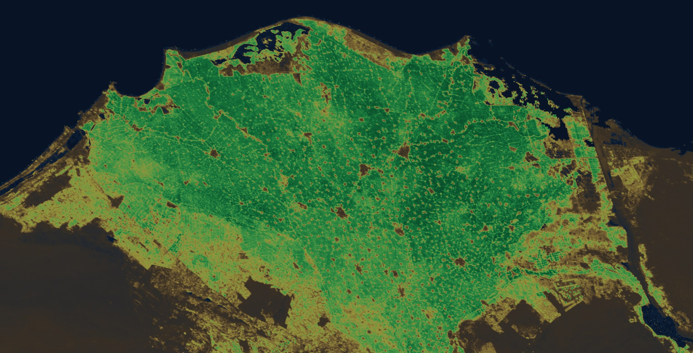
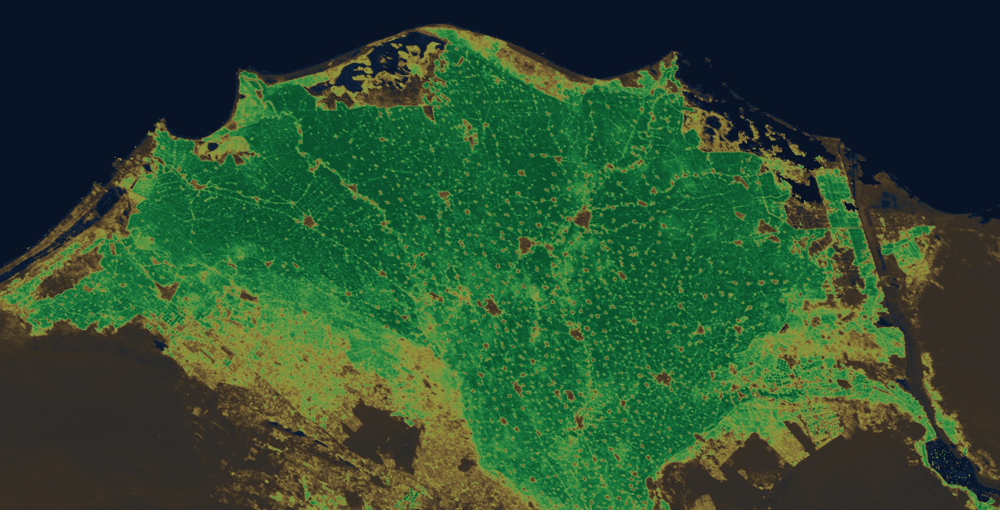

The right crop at the right time.
Eyad turns NASA weather and satellite data into plain advice that a Nile Delta farmer can act on: what to sow, when, and why. He speaks Egyptian Arabic, understands a whole sentence, and shows his numbers.


WinterSummerChoose your view
The same project, four ways in. Start where you are.
Three pressures, one calendar
Delta farmers decide each season what to plant and when. Water, salt and heat interact, and many farmers get little advice. Every figure below is from a paper whose full text we read; see literature/papers.csv.
Water
of tail-end farmers in one western Delta study said growing rice had become very difficult; rice yields fell 30 to 50%. ghazouani2014
Salt
of surveyed Delta farmers report rising soil salinity. Rice helps wash salt out but is the thirstiest crop. kassem2019
The wheat calendar
yield loss in field trials for wheat sown late (mid-January), partly through more rust. A tight calendar, not carelessness. elbasyoni2018
Underneath it all: 31.7% of surveyed Delta farmers are illiterate and most get information from their sons or TV (kassem2019). That is why the product is a voice assistant, not a dashboard.
Try Eyad
Describe a farm and get the advice the app would give. It runs the same lookup tables and the same blueprint rules as the Android app, on NASA POWER weather for the place you pick. Try rice on salty patches, or wheat sown in January.
Season lab
Pick a place, a crop and a sowing date. The chart shows, for every sowing date in the year, the share of the crop's growing days whose temperature is in the crop's ideal range (FAO EcoCrop) using 36 years of NASA POWER weather. The band shows when NASA MODIS says the land is actually green.
How it works
The numbers come from deterministic engines on NASA data. The assistant asks, calls the engines and explains. It does not make up figures.
Ask
The farmer says where the field is, the crop and the dates, in Egyptian Arabic or by tapping a map of Egypt's governorates. Eyad understands a whole sentence and asks only for what is missing.
Compute
Wheat heat by thermal time, FAO-56 crop water demand, FAO-29 salt tolerance, and a sowing-season screen, all on NASA POWER weather for the nearest data point.
Advise
A short answer in plain words: what looks right, what could improve, what to try. Always an estimate from data, never a yield promise.
Eyad's avatar is AI-generated and carries a visible AI mark, as the competition rules require. Details in ai-disclosure.md.
The NASA data
Five NASA datasets held, two of which shape what a farmer sees. We say which is which.
| Dataset | Role | What it does |
|---|---|---|
| NASA POWER daily weather | drives the numbers | Every number the farmer sees: heat, water, weather charts. 19 data points in the app (7 named places and 12 extra ~50 km cells), 1990 to 2025. |
| MODIS MOD13Q1 vegetation index | pictures | The satellite pictures in the app; 2014 to 2025 at 250 m. No farmer-facing number. |
| MODIS MCD12Q2 phenology | cross-check | When the land is green: green-up, peak, dormancy, up to two cycles a year, 2015 to 2025. Shown in the season lab. |
| MODIS MOD16A3GF evapotranspiration | input check | Our yearly reference evapotranspiration is within 1 to 8% of NASA's potential ET at all seven points. |
| GPM IMERG rainfall | context | Summer rain is almost zero, so summer crops depend on irrigation. |
Not NASA, and not counted: FAO crop-water and salt tables, FAO EcoCrop, ESA WorldCover 2021, CAPMAS borders via HDX, Natural Earth. SRTM terrain is on disk but no result uses it.
Why you can trust it
Advice only helps a farmer if it is right, so the project is built to be checked, not just to look convincing.
Numbers are computed, never made up
Heat, water and salt come from engines on NASA POWER weather and FAO tables. The language model may rephrase a sentence; a guard throws the rewrite away if it changes a number or drops a key fact.
It says "cannot judge" when data cannot
For berseem, tomato, sugar beet and tree crops, temperature alone does not separate the seasons, so Eyad says so and sends you to an agricultural engineer instead of guessing.
Every answer is labelled
Advice is marked as an estimate from NASA data, never a promise of a harvest. Anything the AI wrote or voiced is marked as AI, and each decision and data source is logged in the repository.
Built to be tested
446 automated tests, golden cases that the Dart app must reproduce from the Python engines, and independent reviews that caught and fixed real bugs before this page was published.
Sources you can open
Every problem figure cites a paper whose full text we read. Data sets are catalogued with their limits in data/catalog.yaml.
Next steps
Validate heat and water against Delta weather stations, add more crops with sourced parameters, and test with farmers on real phones. The foundations to do it are already in place.
Team
NASA Space Apps 2026, Mansoura Local Event, Egypt. Decisions are logged in decisions.md; AI tool use is disclosed in ai-disclosure.md.
Tarek
Lead and story: the farmer conversation, demo and submission.
Hussain
Data lead and water engine.
Al-Ashmawy
Wheat calendar engine and tests.
Youssef
Voice assistant and app.
Eyad
Salt engine and integration.
Code
MIT licence. github.com/TarekELz/fieldshift